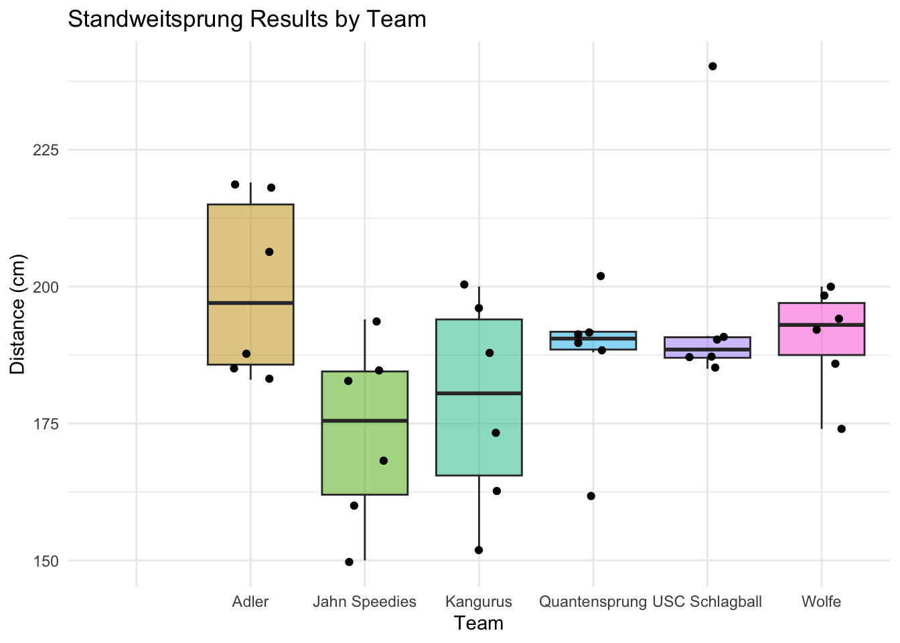
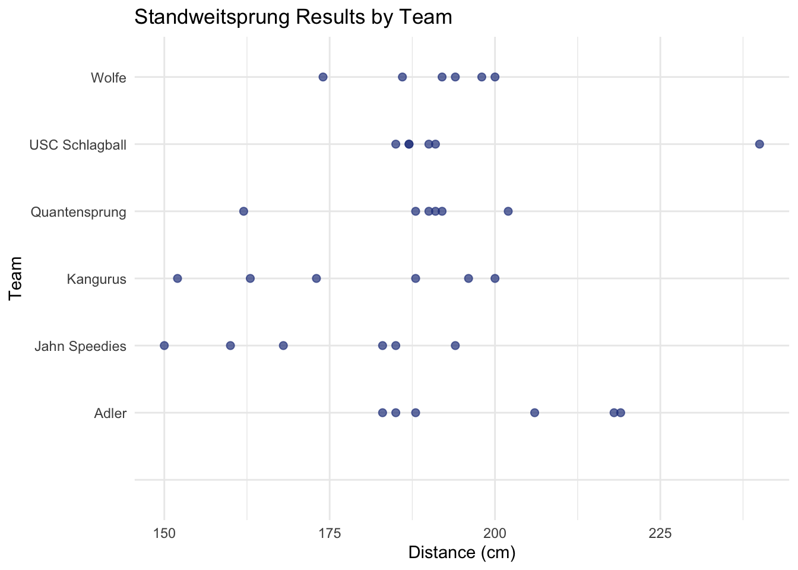

library(tidyverse)
library(psych)
library(knitr)Descriptive Statistics for U12 Standweitsprung
In the following we look at an overview of the data for the U12 Standweitsprung with respect to the different teams.
standweitU12 <- read.csv("output_files/Lindehalle/U12/standweitsprungU12.csv", header = TRUE, sep = ",")
stats <- describeBy(standweitU12$result, standweitU12$team, mat = TRUE)
kable(stats, caption = "Summary per Team")| item | group1 | vars | n | mean | sd | median | trimmed | mad | min | max | range | skew | kurtosis | se | |
|---|---|---|---|---|---|---|---|---|---|---|---|---|---|---|---|
| X11 | 1 | 1 | 0 | NaN | NA | NA | NaN | NA | Inf | -Inf | -Inf | NA | NA | NA | |
| X12 | 2 | Adler | 1 | 6 | 199.8333 | 16.606224 | 197.0 | 199.8333 | 19.2738 | 183 | 219 | 36 | 0.1303086 | -2.1373080 | 6.779463 |
| X13 | 3 | Jahn Speedies | 1 | 6 | 173.3333 | 16.776968 | 175.5 | 173.3333 | 18.5325 | 150 | 194 | 44 | -0.1379156 | -1.8670957 | 6.849169 |
| X14 | 4 | Kangurus | 1 | 6 | 178.6667 | 19.138095 | 180.5 | 178.6667 | 24.4629 | 152 | 200 | 48 | -0.1726298 | -1.9167273 | 7.813094 |
| X15 | 5 | Quantensprung | 1 | 6 | 187.5000 | 13.412681 | 190.5 | 187.5000 | 2.9652 | 162 | 202 | 40 | -0.9243905 | -0.5918241 | 5.475704 |
| X16 | 6 | USC Schlagball | 1 | 6 | 196.6667 | 21.341665 | 188.5 | 196.6667 | 2.9652 | 185 | 240 | 55 | 1.3287762 | -0.1358177 | 8.712698 |
| X17 | 7 | Wolfe | 1 | 6 | 190.6667 | 9.521905 | 193.0 | 190.6667 | 8.8956 | 174 | 200 | 26 | -0.6726836 | -1.2109285 | 3.887301 |
Try to plot:
ggplot(standweitU12, aes(x = team, y = result, fill = team)) +
geom_boxplot(outlier.shape = NA, alpha = 0.5) +
geom_jitter(width = 0.2, size = 1.5) +
theme_minimal() +
labs(title = "Standweitsprung Results by Team",
x = "Team",
y = "Distance (cm)") +
theme(legend.position = "none")
Different plot:
ggplot(standweitU12, aes(x = result, y = team)) +
geom_point(color = "royalblue4", size = 2, alpha = 0.7) +
theme_minimal() +
labs(title = "Standweitsprung Results by Team",
x = "Distance (cm)",
y = "Team")